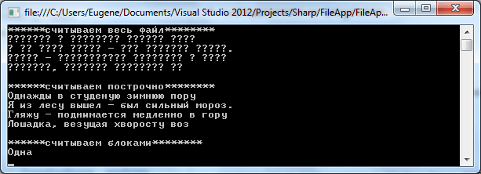

Класс FileStream не очень удобно применять для работы с текстовыми файлами. К тому же для этого в пространстве System.IO определены специальные классы: StreamReader и StreamWriter.
Чтение из файла и StreamReader
Класс StreamReader позволяет нам легко считывать весь текст или отдельные строки из текстового файла. Среди его методов можно выделить следующие:
Считаем текст из файла различными способами:
|
2 3 4 5 6 7 8 9 10 11 12 13 14 15 16 17 18 19 20 21 22 23 24 25 26 27 28 29 30 31 32 33 34 35 36 |
string path= @"C:\SomeDir\hta.txt";
try { Console.WriteLine("******считываем весь файл********"); using (StreamReader sr = new StreamReader(path)) { Console.WriteLine(sr.ReadToEnd()); }
Console.WriteLine(); Console.WriteLine("******считываем построчно********"); using (StreamReader sr = new StreamReader(path, System.Text.Encoding.Default)) { string line; while ((line = sr.ReadLine()) != null) { Console.WriteLine(line); } }
Console.WriteLine(); Console.WriteLine("******считываем блоками********"); using (StreamReader sr = new StreamReader(path, System.Text.Encoding.Default)) { char[] array = new char[4]; // считываем 4 символа sr.Read(array, 0, 4);
Console.WriteLine(array); } } catch (Exception e) { Console.WriteLine(e.Message); } |
Как и в случае с классом FileStream здесь используется конструкция using.
В первом случае мы разом считываем весь текст с помощью метода ReadToEnd().
Во втором случае считываем построчно через цикл while: while ((line = sr.ReadLine()) != null) - сначала присваиваем переменной line результат функции sr.ReadLine(), а затем проверяем, не равна ли она null. Когда объект sr дойдет до конца файла и больше строк не останется, то метод sr.ReadLine() будет возвращать null.
В третьем случае считываем в массив четыре символа.
Обратите внимание, что в последних двух случаях в конструкторе StreamReader указывалась кодировка System.Text.Encoding.Default. Свойство Default класса Encoding получает кодировку для текущей кодовой страницы ANSI. Также через другие свойства мы можем указать другие кодировки. Если кодировка не указана, то при чтении используется UTF8. Иногда важно указывать кодировку, так как она может отличаться от UTF8, и тогда мы получим некорректный вывод. Например:
Запись в файл и StreamWriter
Для записи в текстовый файл используется класс StreamWriter. Свою функциональность он реализует через следующие методы:
Рассмотрим запись в файл на примере:
|
2 3 4 5 6 7 8 9 10 11 12 13 14 15 16 17 18 19 20 21 22 23 24 25 |
string readPath= @"C:\SomeDir\hta.txt"; string writePath = @"C:\SomeDir\ath.txt";
string text = ""; try { using (StreamReader sr = new StreamReader(readPath, System.Text.Encoding.Default)) { text=sr.ReadToEnd(); } using (StreamWriter sw = new StreamWriter(writePath, false, System.Text.Encoding.Default)) { sw.WriteLine(text); }
using (StreamWriter sw = new StreamWriter(writePath, true, System.Text.Encoding.Default)) { sw.WriteLine("Дозапись"); sw.Write(4.5); } } catch (Exception e) { Console.WriteLine(e.Message); } |
Здесь сначала мы считываем файл в переменную text, а затем записываем эту переменную в файл, а затем через объект StreamWriter записываем в новый файл.
Класс StreamWriter имеет несколько конструкторов. Здесь мы использовали один из них: new StreamWriter(writePath, false, System.Text.Encoding.Default). В качестве первого параметра передается путь к записываемому файлу. Второй параметр представляет булевую переменную, которая определяет, будет файл дозаписываться или перезаписываться. Если этот параметр равен true, то новые данные добавляются в конце к уже имеющимся данным. Если false, то файл перезаписывается. И если в первом случае файл перезаписывается, то во втором делается дозапись в конец файла.
Третий параметр указывает кодировку, в которой записывается файл.